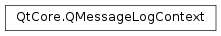

QMessageLogContext¶
Detailed Description¶
The
PySide2.QtCore.QMessageLogContextclass provides additional information about a log message.The class provides information about the source code location a
qDebug(),qInfo(),qWarning(),qCritical()orqFatal()message was generated.Note
By default, this information is recorded only in debug builds. You can overwrite this explicitly by defining
QT_MESSAGELOGCONTEXTorQT_NO_MESSAGELOGCONTEXT.See also
QMessageLoggerQtMessageHandlerqInstallMessageHandler()
-
class
PySide2.QtCore.QMessageLogContext¶ -
class
PySide2.QtCore.QMessageLogContext(fileName, lineNumber, functionName, categoryName) Parameters: - categoryName – str
- functionName – str
- fileName – str
- lineNumber –
PySide2.QtCore.int
Constructs a
PySide2.QtCore.QMessageLogContextConstructs a
PySide2.QtCore.QMessageLogContextwith for filefileNameat linelineNumber, in functionfunctionName, and categorycategoryName.
-
PySide2.QtCore.QMessageLogContext.version¶
-
PySide2.QtCore.QMessageLogContext.line¶
-
PySide2.QtCore.QMessageLogContext.file¶
-
PySide2.QtCore.QMessageLogContext.function¶
-
PySide2.QtCore.QMessageLogContext.category¶
© 2018 The Qt Company Ltd. Documentation contributions included herein are the copyrights of their respective owners. The documentation provided herein is licensed under the terms of the GNU Free Documentation License version 1.3 as published by the Free Software Foundation. Qt and respective logos are trademarks of The Qt Company Ltd. in Finland and/or other countries worldwide. All other trademarks are property of their respective owners.